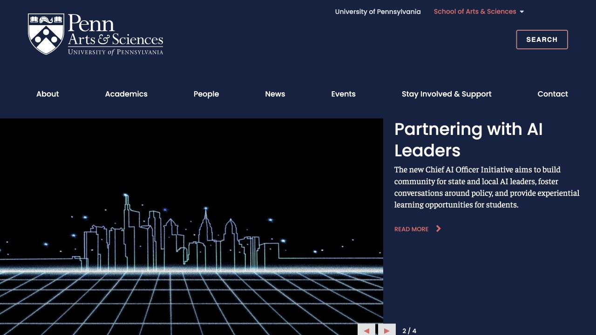

Visitors meet many equal-weight choices before understanding which path is relevant to them.
Penn Arts & Sciences
Redesigning a clumsy digital experience into a clear student-first system

I redesigned Penn Arts & Sciences’ website and social media presence as one connected experience. The website redesign makes academic information easier to find, while the social redesign replaces crowded, inconsistent posts with a clearer editorial system.
Original website ↗
“Penn’s content felt prestigious.
The experience did not feel easy.”
Problem: Strong content, weak hierarchy
The current website contains valuable information, but navigation, institutional divisions, news and events compete at similar levels. It reflects how the organization is structured more than how a student searches for help.
The social media content had a similar problem. Individual posts used different type styles, layouts and image treatments, making the feed feel crowded and less polished than the institution it represents.
Audit
I reviewed the live homepage and existing social posts to identify where the experience became difficult to scan or visually inconsistent.
Small calls to action and dense supporting copy make the next step easy to miss.
The website and social feed do not share a consistent hierarchy, tone or visual rhythm.
Solution: One clearer digital system
I kept Penn’s established navy and red, then rebuilt the experience around student needs. The website provides clearer entry points and the social system uses repeatable editorial layouts.
⌖Student-first navigation
▤Scannable content hierarchy
◫Consistent social templates
↗Stronger calls to action
Website: Designing around student needs.
The redesigned landing page begins with one clear campus story, followed by three recognizable paths: curriculum, academic exploration, and advising. Students can understand the structure before they begin reading details.
Resources, events and college updates use consistent cards and section patterns, so the page remains useful without feeling like a directory.
Previous websiteScroll to explore
My redesignScroll to explorePDF ↗
From organization-first to student-first.
The original homepage foregrounds institutional categories. My version foregrounds the decisions students need to make: what to study, where to find support, and what is happening next.
Impact: A clearer and more cohesive Penn
This independent concept was not launched, so I do not claim measured performance results. The design outcome is a more understandable website, a more consistent social identity, and a system that better reflects Penn’s academic quality and student energy.
Clearer navigationStronger hierarchyConsistent brand expressionMore human storytelling
Back to top ↑